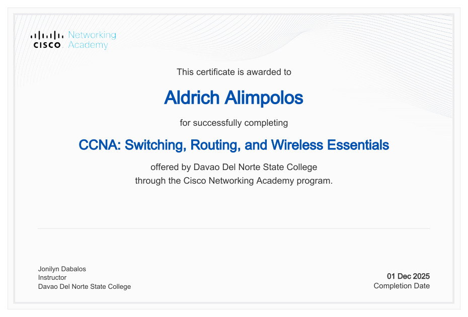

2023 — 2027 Expected completion
COLLEGE · CURRENT
Bachelor of Science in Information Technology
Davao del Norte State College
4th Year · BSIT 4D · Major in Software Development
INFORMATION TECHNOLOGY STUDENT
An aspiring software developer who enjoys solving problems, exploring technology, and turning ideas into useful digital experiences.
Based in Davao del Norte, Philippines
01 / A LITTLE ABOUT ME
I’m a fourth-year Bachelor of Science in Information Technology student at Davao del Norte State College, majoring in Software Development.
I enjoy exploring programming languages and frameworks, building projects that challenge my skills, and collaborating with others on meaningful solutions. Outside of coding, I enjoy gaming and keeping up with technology trends.
To apply my knowledge of web development and software development in an internship or entry-level opportunity, contribute to practical projects, and grow through hands-on experience and collaboration.
02 / EDUCATION
A foundation for what comes next.
2023 — 2027 Expected completion
Davao del Norte State College
4th Year · BSIT 4D · Major in Software Development
2020 — 2022
A.O. Floirendo National High School
ICT Strand
03 / MY TOOLKIT
Learning through practice.
Building interfaces with an emphasis on structure, usability, and responsive layouts.
Exploring tools for programming, collaboration, databases, and interface design.
Approaching challenges with curiosity and contributing to shared goals.
04 / SELECTED WORK
A responsive professional portfolio presenting my profile, education, technical skills, and career interests. Built with semantic sections, accessible navigation, and subtle interactions.
05 / EXPERIENCE & GROWTH
My current experience centers on academic and personal learning. This IT415 CV project brings together page structure, styling, responsive design, and browser interactions in one practical website.
See the project ↑Technical Education and Skills Development Authority (TESDA)
Issued
Valid until
Certified competencies in installing and configuring computer systems, setting up computer networks and servers, and maintaining and repairing computer systems and networks.

Cisco Networking Academy / Offered by Davao Del Norte State College
Completed
View certificate (PDF) ↗06 / LET’S CONNECT
I’m interested in opportunities to learn, collaborate, and contribute to real-world development projects.
Send an email